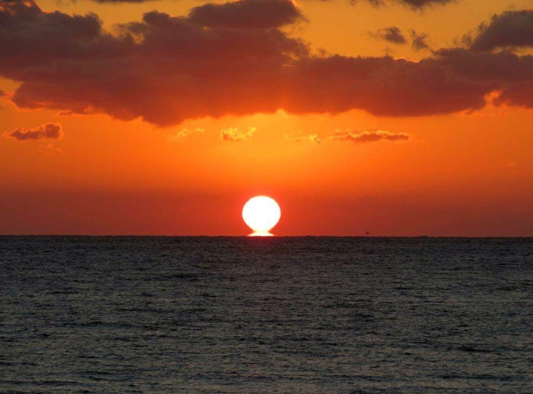
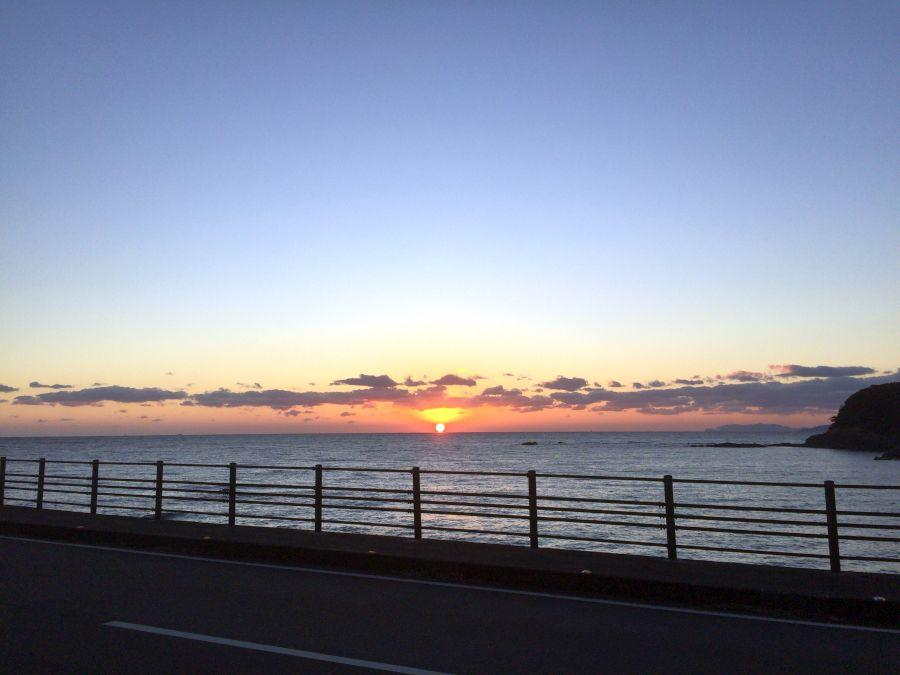
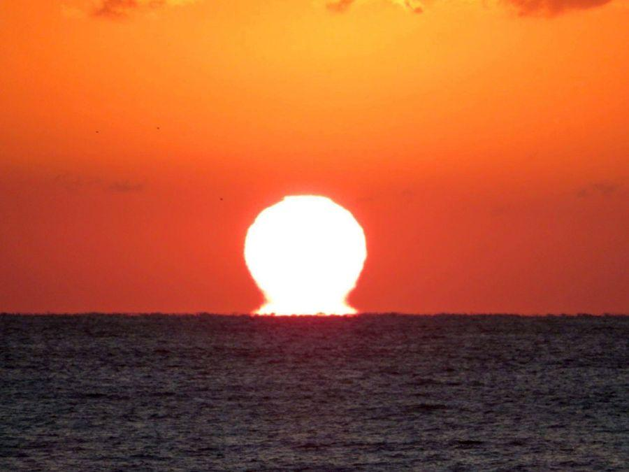
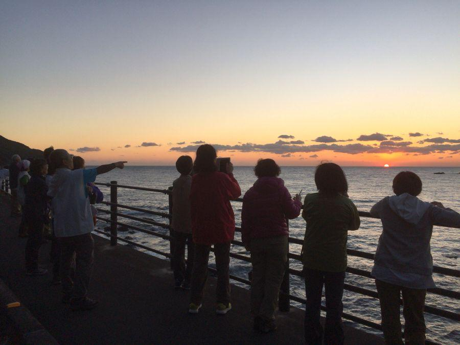
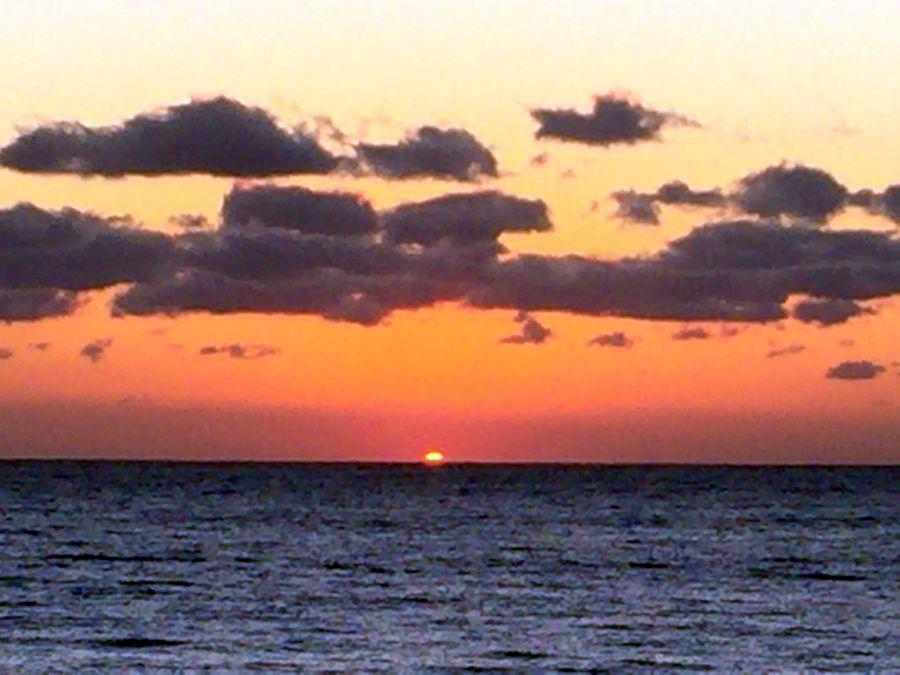

冬の日にだけ見ることができる神秘 ＜ だるま夕日 / 高知県 ＞

四国で見た夕日が忘れられない
と、いう声をよく耳にします。周囲をぐるりと海に囲まれた四国では 海に沈む太陽を見ることができる場所が多く、その場面に遭遇すると どこか幸せな気持ちになります。
更に強運だと、こちらの写真のように太陽が海に沈む時に 海から浮かび上がった太陽と重なる、 「だるま夕日」現象を見ることができます。
だるま夕日を見る条件

★ 冬期
★ 冷え込みが強い
★ 西向き
★ 水平線に太陽が沈む場所
★ 水平線に雲が無い
主にこれらの条件が必要です。それさえ整っていれば、全国各地でだるま夕日を見ることができる場所は たくさんある。こちらのだるま夕日は 足摺岬近くの土佐清水市内で見ることができました。名所となっているかどうかは 自治体がだるま夕日が見れることをアピールしているかどうかですね。
だるま夕日は 、気温 / 水温差によって海面から発生する水蒸気によって光が屈折することで起きる、蜃気楼現象の一種。
大気温は一日の中で変動が大きいけれど、水温は一日あたりで見ると変動が小さい。冬は水温の方が温かい事と、よく晴れた日は放射冷却現象によって大気が冷やされるため、その大きな温度差が水面から水蒸気を発生させる。
冬しか見ることができないのはそのため。
"だるま夕日のまち"
をアピールしている 高知県西部の宿毛市は だるま夕日観測・撮影の有名スポットですが、各種好条件が揃っていることが挙げられます。
海から浮かび上がる もう一つの太陽

太陽が水平線に近付くにつれ 下からニセの太陽が上がり始め本物の太陽とドッキング、その時の形状が この通り だるまさん。
わあっと感動するのも束の間、この一部始終は一瞬の出来事。時間を計っていないので 実際の所要時間はわかりませんが、体感としては1分もないように感じました。
写真全体がザワついているように見えるのは、水面付近に水蒸気が立ち込めているため。大気が乱れて 本当の太陽、本当の水面が見えにくくなっているわけです。

この一瞬の出来事、団体での歩き遍路道中に遭遇しました。
だるま夕日のメッカと言われる宿毛市でさえ それが観測されるのは年間20回ほど。この時は全員が だるま夕日初見でした。
だるま夕日を見終えて...

秋の日は釣瓶落とし
太陽が沈み始めたと思ったら 完全に見えなくなるまで一瞬の出来事です。そして長い夜が始まります。
だるま夕日を見れるかどうか 運の要素がとても大きいですが、見れた時はとても幸せな気持ちになります。
もし 海に沈む夕日が見れる場面に遭遇した際は 足を止めて太陽と海を眺めてみてください。本当に一瞬の出来事、その瞬間が全てを持っていくほど、感動的な場面です。
なお、だるま夕日と似た条件で 明け方に東向きに開けた場所であれば だるま朝日 を観測できる場合があります。高知県だと室戸岬東岸がそのスポット。ですが、だるま朝日が観測されるのは年間10回以下と、だるま夕日より見ることができる確率が低い 幻の場面です。